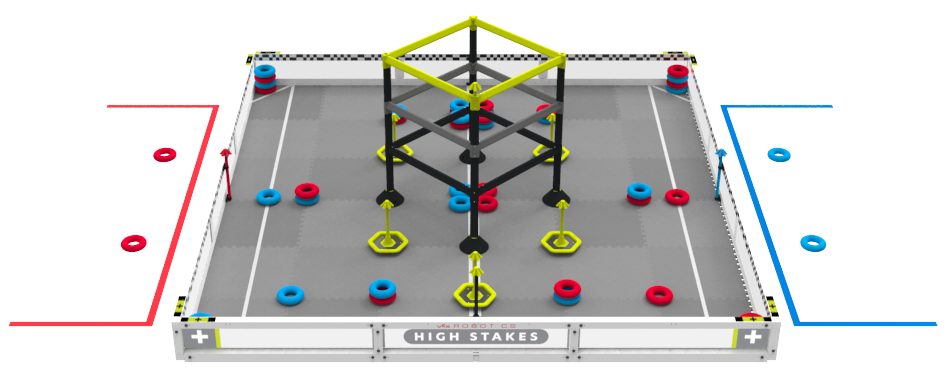

VEX V5 Robotics Competition High Stakes is played on a 12’ x 12’ square field configured as seen above. Two (2) Alliances – one (1) “red” and one (1) “blue” – composed of two (2) Teams each, compete in matches consisting of a fifteen (15) second Autonomous Period, followed by a one minute and forty-five second (1:45) Driver Controlled Period. The object of the game is to attain a higher score than the opposing Alliance by Scoring Rings on Stakes, Placing Mobile Goals, and by Climbing at the end of the Match.
There are forty-eight (48) Rings on a V5RC High Stakes Field. There are nine (9) Stakes located around the field. Five (5) on Mobile Goals, four (4) Wall Stakes, one (1) per Alliance and two (2) neutral, and one (1) on top of the Ladder. Each Ring scored on a Stake is worth one (1) point. The Top Ring on each Stake is worth three (3) points. Mobile Goals can be Placed into Positive Corners or Negative Corners to change the values of the Rings on that Goal. The V5RC High Stakes field also includes a Ladder in the center of the field. Robots climb the Ladder at the end of the Match to receive additional points. The higher the Robot climbs, the more points it will receive! The Alliance that scores more points in the Autonomous period is awarded with six (6) bonus points, added to the final score at the end of the match. Each Alliance also has the opportunity to earn an Autonomous Win Point by completing assigned tasks. This additional Win Point can be earned by both Alliances, regardless of who wins the Autonomous Bonus.